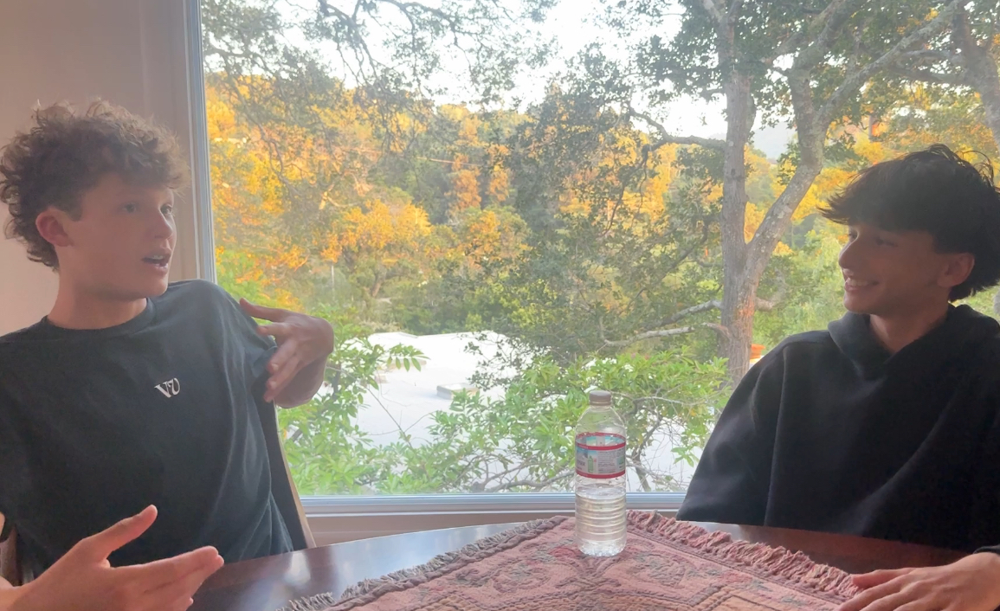
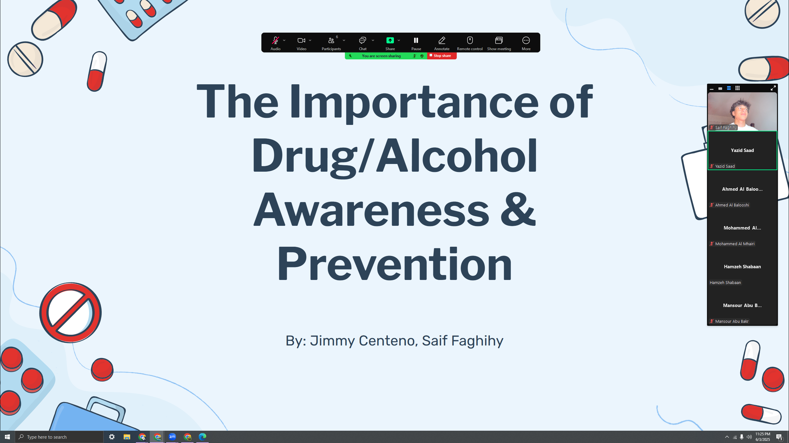
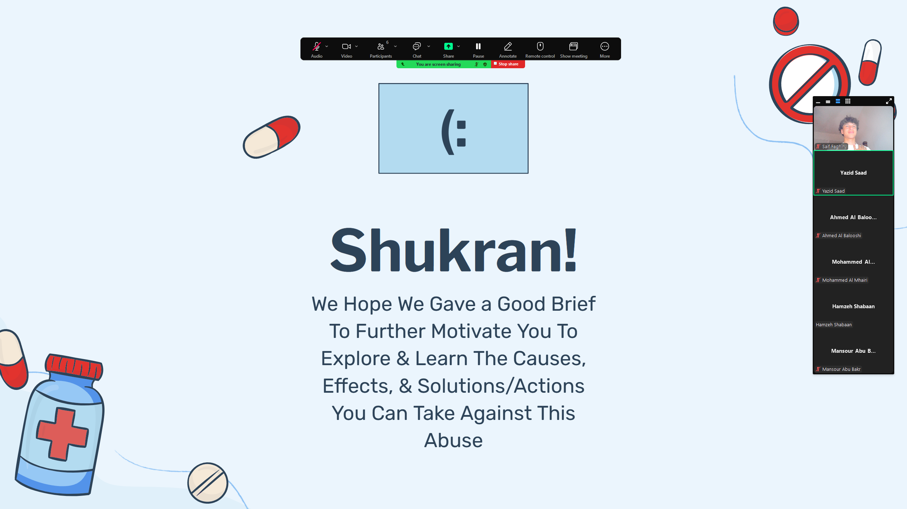

Unfiltered
We have created this website that aims to provide a center for multiple resources, including information about the issue, causes, effects, solutions, little actions that we are partaking in, such as podcasts, presentations, and more, as well as a means of getting help if needed.
Podcast:
The podcast, Unfiltered, is our way of better connecting to the youth. It is a podcast where we cover multiple matters of the issue, from different perspectives to help students understand the issue in a more connecting, more enjoyable way. We aim to make many more as part of our series, involving as many more perspectives as we can.
Presentations:
We present to varying audiences on the matter, with the goal of hoping to make a difference, even if it isn’t a big one, but to at least plant the seed in those eager to learn. So far, we have gathered students looking to pursue higher education here in America, that currently study in one of Dubai’s high schools. Being there is being blind to the issue present here, so we decided to start off with a small presentation to cover some of the basics, and hope to expand over time.
 FundRaisers:
Although we haven’t begun yet, the fundraising goal RedSafe has is to use the power of “money” present here in Marin, in favor of the support and initiative of helping reduce the abuse of drugs and alcohol in teens.
Data Collecting:
Our website features a section which allows students to put in quantitative and qualitative information that is automatically flushed into a Google Sheet chart, which is placed on the website’s home page monthly. This helps members of the community get an idea of how large scale the issue is really at, and will help us learn our community, to further improve our campaign.